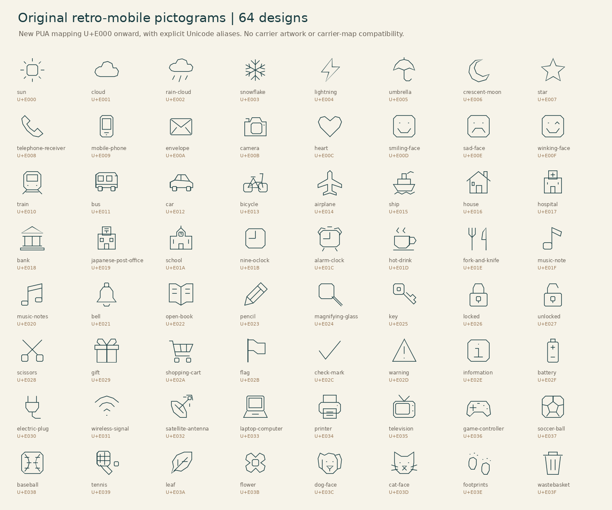

Singleline JP Lab
Original geometric centerlines · 8 static styles · 2 variable families · 1-bit binary fonts
Experimental, not release-certified. Expanded Kanji are mechanical composition drafts and have not all been individually proofread. Encoding coverage does not certify correct Japanese forms or small-size legibility. Missing characters remain missing. Italian means upright reverse contrast. PC98 is an original stylistic interpretation, not copied ROM artwork.
- jis_level_1: 2,965 / 2,965, missing 0
- jis_level_2: 3,390 / 3,390, missing 0
- jis_level_3: 1,259 / 1,259, missing 0
- jis_level_4: 2,436 / 2,436, missing 0
- jinmeiyo: 864 / 864, missing 0
- jis_nonkanji: 1,183 / 1,183, missing 0
- jis_multiscalar: 25 / 25, missing 0
- Unfinished quality check: deep_composition — 434 glyphs
- Unfinished quality check: non_japanese_ids_variant — 78 glyphs
- Unfinished quality check: unreviewed_enclosure — 1,177 glyphs
- Unfinished quality check: unreviewed_overlay — 239 glyphs
Exact coverage report · Build and format notes · Complete centerline SVGZ (gzip) · SVG extraction instructions
Singleline
日本語 永鬱 明朝 Agfg 0123 ∑√∞ αβγ
PC98 Mincho Inspired
日本語 永鬱 明朝 Agfg 0123 ∑√∞ αβγ
Gothic
日本語 永鬱 明朝 Agfg 0123 ∑√∞ αβγ
Italian Reverse Contrast
日本語 永鬱 明朝 Agfg 0123 ∑√∞ αβγ
Serif
日本語 永鬱 明朝 Agfg 0123 ∑√∞ αβγ
Italic
日本語 永鬱 明朝 Agfg 0123 ∑√∞ αβγ
Subscript
日本語 永鬱 明朝 Agfg 0123 ∑√∞ αβγ
Superscript
日本語 永鬱 明朝 Agfg 0123 ∑√∞ αβγ
Missing requested characters
These are deliberately not mapped to substitute or repeated shapes. Consult coverage.json for separate Kanji/non-Kanji requirements.
Original retro pictograms

Code/coordinates retain AGPL v3. CJKVI-IDS structure and derived Japanese assets retain GPL v2 notices. Unicode data license is bundled. See NOTICE.md before redistribution.